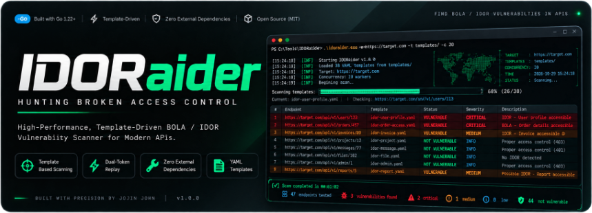

Hunt Broken Object Level Authorization with Zero Noise
IDORaider is a high-performance, template-driven security scanner that replays API requests under verified multi-token authentication contexts to definitively prove BOLA / IDOR vulnerabilities.

git clone https://github.com/jojin1709/idoraider.git; cd idoraider; go build -o idoraider.exe ./cmd/idoraider
Interactive Terminal Simulator
Watch IDORaider's real-time detection engine in action. No simulated fake results — accurate HTTP status validation and BOLA classification.
Built for Elite Bug Hunters & Security Engineers
Eliminating the noise and false positives of generic fuzzers by automating the exact methodology manual pentesters use.
Automated Dual-Token Replay
Send request with Owner Token A, then replay with Attacker Token B. If Token B gains access to Token A's private resource, BOLA is mathematically proven with zero false positives.
Zero External Dependencies
Written in 100% Go standard library. Features a custom fast YAML parser, zero supply-chain risk, zero external packages, and builds instantly offline on any OS.
Advanced Match Conditions
Supports match_not_status: [401, 403, 404] to immediately filter out restricted or missing resources, and match_condition: all | any for compound keyword matching.
Burp Suite & Proxy Routing
Seamlessly proxy all scan traffic through Burp Suite, OWASP ZAP, or Caido using -x http://127.0.0.1:8080. Includes -k to bypass self-signed CA certs.
Redirect Loop Suppression
By default, IDORaider halts on 301/302 redirects instead of following them into authentication gateways and login pages, eliminating false-positive 200 responses.
Dual JSON & Markdown Reports
Automatically generates machine-readable JSON for CI/CD pipelines plus beautifully formatted Markdown summaries ready to paste directly into HackerOne or Bugcrowd reports.
Interactive Command Builder
Configure your target, tokens, and options to generate the exact command ready to run in your terminal.
.\idoraider.exe -u https://api.target.com -t templates/ --token "eyJhbGciOi..." --secondary-token "eyJhbGciOi..." -c 20
Template-Driven Architecture
Easily author custom YAML probes or leverage pre-built templates covering the most dangerous API attack vectors.
How Dual-Token BOLA Detection Works
A transparent, deterministic 4-state evaluation engine that guarantees proof of authorization bypass.
Template Hydration
Paths and candidate resource IDs ({id}) are mapped to worker queues. Custom candidate overrides (--ids) are injected.
Owner Baseline
Target endpoint is requested with Owner Token A to verify the resource exists and owner access is legitimate (200 OK).
Attacker Replay
The exact same request is immediately executed using Secondary Token B (an unrelated, lower-privileged user).
BOLA Verification
If Token B also receives 200 OK with keywords, BOLA is mathematically proven and flagged as Critical/High.
Full CLI Reference
Complete command-line options supported by the IDORaider binary.